Ara crearem una consulta que ens mostri els llibres que són d'una determinada llengua. Farem la consulta amb paràmetre tal com es mostra a la imatge, per tal de que quan s'obri l'informe que crearem a partir d'ella se'ns demani la llengua. D'aquesta manera la informació de l'informe variarà segons el valor indicat.
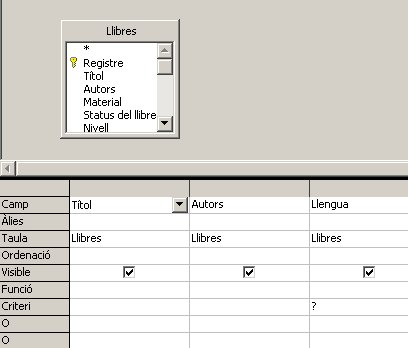
Anomeneu Libres per llengua a la consulta. Aneu a informes i indiqueu que voleu crear un de nou. Seleccioneu la consulta i tots els seus camps.
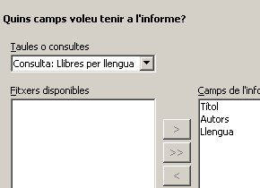
Canviar el nom de les etiquetes si cal:
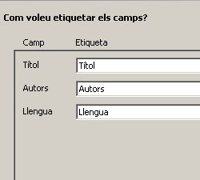
Seleccioneu el camp Llengua com a camp per agrupar. Encara que únicament es mostraran els llibres d'una única llengua d'aquesta manera ens estalviem que escrigui a tots els registres el mateix valor i a la vegada que mostri aquest a l'inici de l'informe.
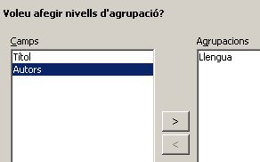
Seleccioneu el format que vulgueu.
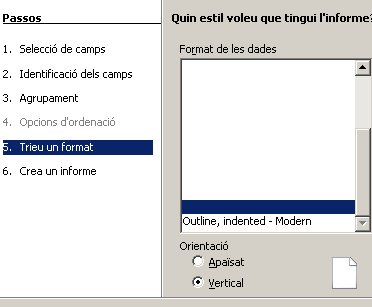
Anomeneu l'informe i finalitzeu per veure com queda.
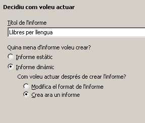
Abans de mostrar la informació de l'informe com que la consulta tenia un paràmetre ens demanarà el seu valor.
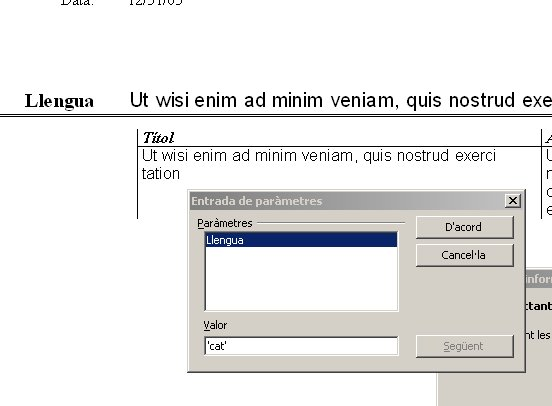
Quan polseu d'acord podreu veure el resultat final.
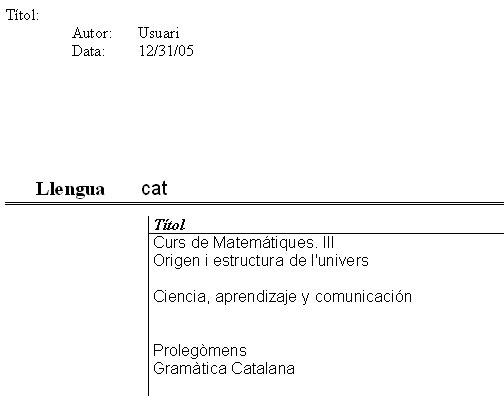
Ara modificarem el disseny de l'informe per tal que ens quedi així.
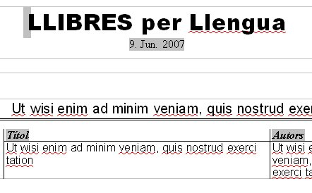
Un cop desat l'informe feu clic sobre el botó dret a sobre del nom i seleccioneu editar. Ara heu de modificar els següents elements:
Ara creeu una consulta anomenada Any edició superior a 2000 que tingui el següent disseny:
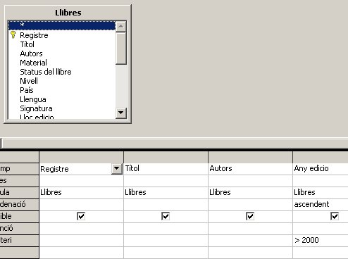
A partir d'aquesta consulta crearem un informe que mostri els llibres editats a partir de l'any 2000 però agrupats per any.
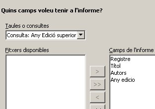
Agrupem per Any edicio.
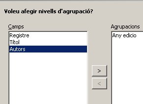
Anomeneu l'informe i finalitzeu.
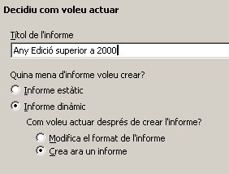
Observeu el resultat final.
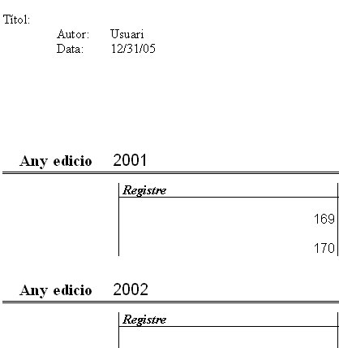
Ara modificarem el disseny perquè ens quedi així.
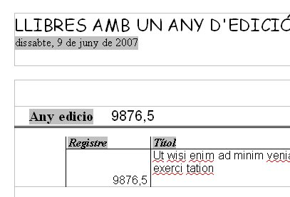
L'element nou que incorporem aquí és la possibilitat de seleccionar format de data per idiomes.
Dintre del disseny feu un doble clic sobre la data i seleccioneu el quadre que es mostra l'opció Formats addicionals…
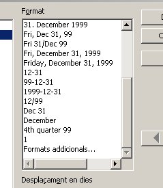
Ara seleccioneu a la nova finestra la Llengua Català i el format indicat a la imatge.
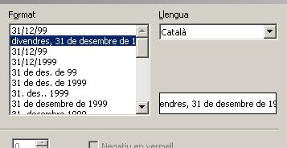
Deseu els canvis, torneu a obrir l'informe veureu el resultat final.

|
|

|
|